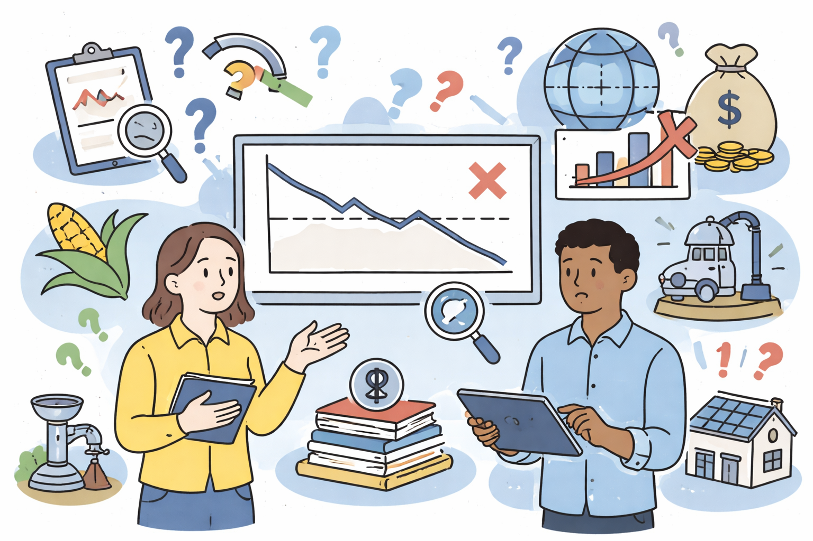

Associate Professor
Harvard Graduate School of Education

The economics of education in low- and middle-income countries
Graduate
This course examines the economic analysis of education systems in developing countries. Topics include the returns to education, determinants of educational quality, teacher labor markets, school choice and competition, and the design and evaluation of education policies and interventions.

Evidence
Graduate
This course equips students with the foundational skills and knowledge they need to interpret the most common forms of evidence in education settings and apply them to their practice. Topics include descriptive statistics, research design, causal inference, and critical evaluation of quantitative and qualitative studies.